Turning the Event-Driven Claims Agent into a reusable, multi-client template on Amazon Bedrock AgentCore.
The challenge for the team: separate the reusable engine from the domain-specific parts, and make the domain a declarative configuration.
A claim arrives by email → S3 → EventBridge → Lambda → AgentCore Runtime. No human trigger.
A Processor makes an ACCEPT/REJECT decision; an independent Validator reviews it and scores confidence.
Auto-approve, escalate to human review, or reject — enforced by a Cedar policy engine.
One-command deploy provisions ~76 AWS resources and uses 7 AgentCore services. That breadth is exactly what makes it a strong framework seed.

Claims Processor
Extracts details, looks up the policy via a Gateway tool, and makes an ACCEPT / REJECT decision as structured output.
Validation Agent
Independently reviews the decision (reduces single-model bias) and assigns a confidence score + routing.
Execution
Deterministic: auto-approve, escalate to human, or reject — then create the claim & notify via tools.
This "propose then check" shape is a reusable orchestration pattern, not something specific to claims.
Hosts the dual-agent container; SigV4 inbound auth; streaming.
MCP tool discovery + invocation over Lambda targets.
Manages Runtime → Gateway OAuth tokens; no secrets in env.
Semantic + summarization recall across sessions.
Cedar policies enforced before every tool call.
Built-in quality metrics on each invocation.
Traces + logs + transaction search.
One-command infra: 76 resources, repeatable.
Our job: push everything on the right into a declarative client config behind stable extension points.
Support variable agent counts, multiple trigger types (API, schedule, queue), and optional features — not just the email/dual-agent shape.
Engineers clone the template, fill a client-config, and deploy per engagement. Optimize for repeatability.
One deployment (account/stack) per client — clean data isolation, security, and cost attribution.
Principle: code becomes the engine; a single declarative client configuration spec becomes the client.
Fix the known bugs; lock them with tests.
Boundaries, the client-config spec, extension interfaces, validator.
Externalize prompts, schemas, routing, data model, policies, branding.
Variable agents, pluggable trigger adapters & tool registry.
Scaffolding CLI, config→infra generator, deploy pipeline, eval gates.
Isolation, secrets, docs, onboarding — and a 2nd-domain build.
One declarative source of truth — identity, agents, tools, triggers, data, policies, models. Everything else keys off this.
Single/dual/multi-agent pipelines and trigger adapters (API, schedule, queue) selected by config.
create-client scaffoldingGenerate a new, deployable client project from the template + a config file — no manual placeholder edits.
Build a different domain (e.g. IT-incident or HR) end-to-end. This is our Definition of Done.
Full task breakdown (~40 tasks with roles, effort & dependencies) lives in the framework plan.
We stand up a completely different domain from the framework — new prompts, tools, data, trigger — with only config changes and zero core edits, deployed as an isolated stack.
Domain lives in a declarative client-config; the engine stays untouched between clients.
CI + automated AgentCore eval gates block regressions; the Phase-0 tests protect the baseline.
ADRs for architecture choices; the config spec is the team's shared contract.
Open questions to close: config format (YAML/JSON), multi-agent = sequential vs graph, and any compliance verticals (HIPAA/PCI/GDPR).